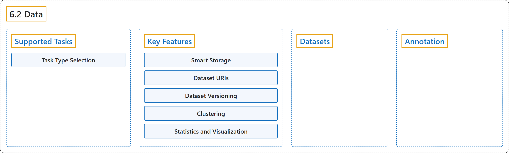

6.2 Data
Classification

Glossary
| Term | Definition | 中文翻译 | Source |
|---|---|---|---|
| 6.2 Data 数据 |
(context) "Data preparation is the foundation of successful computer vision models." | （语境）数据准备是成功的计算机视觉模型的基础。 | Ultralytics, n.d.-b, "Data Preparation", para. 1 |
| Supported Tasks 支持的任务 |
(context) "Ultralytics Platform datasets support all 7 YOLO task types:" | （语境）Ultralytics 平台的数据集支持全部 7 种 YOLO 任务类型： | Ultralytics, n.d.-b, "Supported Tasks", para. 1 |
| Task Type Selection 任务类型选择 |
"The task type is set when creating a dataset and determines which annotation tools are available." | 任务类型在创建数据集时设定，并决定可用的标注工具。 | Ultralytics, n.d.-b, "Supported Tasks", Task Type Selection, para. 1 |
| Key Features 主要功能 |
(No definition) | （无定义） | Ultralytics, n.d.-b, "Key Features" |
| Smart Storage 智能存储 |
(context) "Ultralytics Platform manages storage efficiently:" | （语境）Ultralytics 平台高效地管理存储： | Ultralytics, n.d.-b, "Smart Storage", para. 1 |
| Deduplication 去重 |
"Deduplication: Identical images in the same data region are stored once" | 去重：同一数据区域中相同的图像只存储一次 | Ultralytics, n.d.-b, "Smart Storage", item 1 |
| Integrity 完整性 |
"Integrity: Uploads are verified for data integrity" | 完整性：上传内容会经过数据完整性校验 | Ultralytics, n.d.-b, "Smart Storage", item 2 |
| Efficiency 效率 |
"Efficiency: Optimized storage and fast processing" | 效率：优化的存储和快速的处理 | Ultralytics, n.d.-b, "Smart Storage", item 3 |
| Dataset URIs 数据集 URI |
"Reference datasets using the ul:// URI format" |
使用 ul:// URI 格式引用数据集 |
Ultralytics, n.d.-b, "Dataset URIs", para. 1 |
| Dataset Versioning 数据集版本管理 |
"Create immutable NDJSON snapshots of your dataset for reproducible training." | 为数据集创建不可变的 NDJSON 快照，以便可复现地训练。 | Ultralytics, n.d.-b, "Dataset Versioning", para. 1 |
| Clustering 聚类 |
"Explore your dataset as an interactive 2D scatter plot where visually similar images sit close together" | 把数据集当作一张交互式二维散点图来探索，视觉上相似的图像彼此靠近 | Ultralytics, n.d.-b, "Clustering", para. 1 |
| Statistics and Visualization 统计与可视化 |
(context) "The Charts tab provides automatic analysis including:" |
（语境）Charts 标签页提供自动分析，包括： |
Ultralytics, n.d.-b, "Statistics and Visualization", para. 1 |
| Datasets 数据集 |
"Ultralytics Platform datasets provide a streamlined solution for managing your training data." | Ultralytics Platform 的数据集提供一种管理训练数据的简化方案。 | Ultralytics, n.d.-c, "Datasets", para. 1 |
| Annotation 标注 |
"Ultralytics Platform includes an annotation editor for labeling images with bounding boxes, polygons, keypoints, oriented boxes, and classifications." | Ultralytics Platform 包含一个标注编辑器，可用边界框、多边形、关键点、旋转框和分类标签标注图像。 | Ultralytics, n.d.-a, "Annotation Editor", para. 1 |
References
Ultralytics. (n.d.-a). Annotation Editor. Ultralytics YOLO Docs (ultralytics 8.4.194). Retrieved October 31, 2026, from https://docs.ultralytics.com/platform/data/annotation/
Ultralytics. (n.d.-b). Data Preparation. Ultralytics YOLO Docs (ultralytics 8.4.194). Retrieved October 31, 2026, from https://docs.ultralytics.com/platform/data/
Ultralytics. (n.d.-c). Datasets. Ultralytics YOLO Docs (ultralytics 8.4.194). Retrieved October 31, 2026, from https://docs.ultralytics.com/platform/data/datasets/